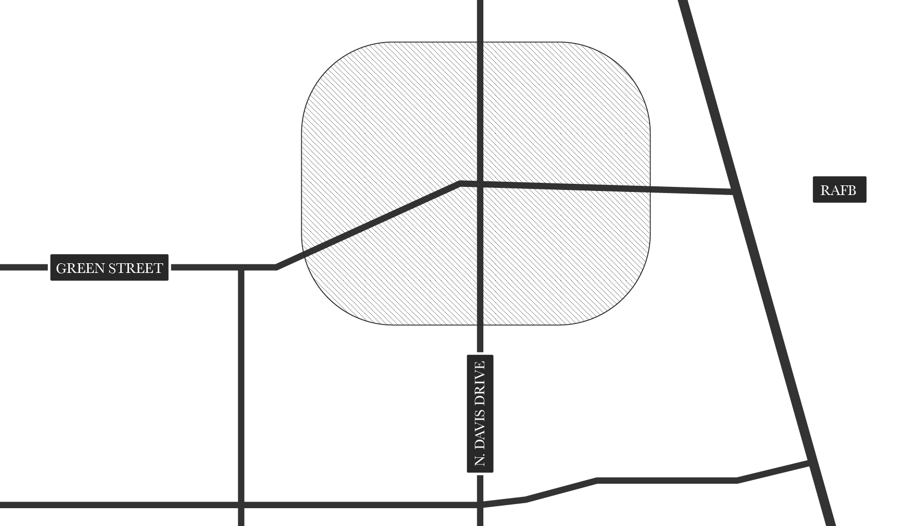
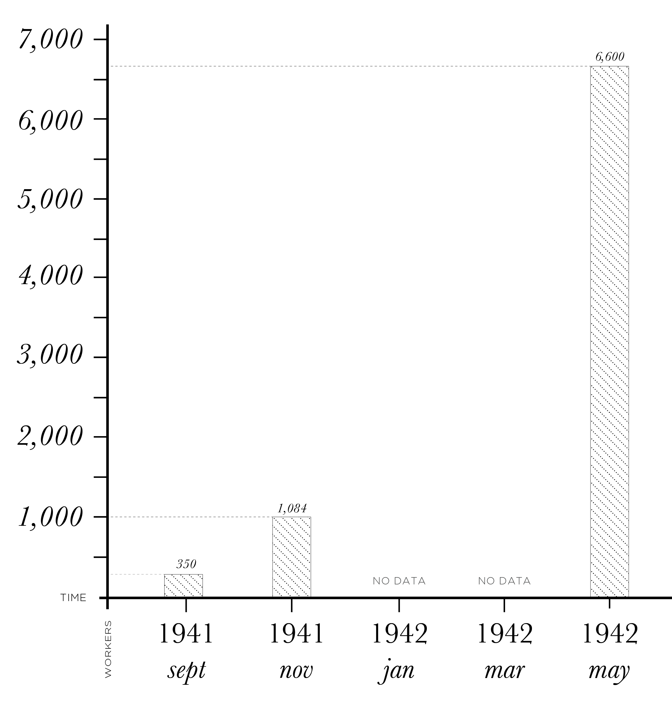

arner Robins is a city that was born from the grim necessity of war. In the early 1900's a tiny train, the 'Shoofly,' entered Houston County down near Elberta and its first stop at a small station built on land that was originally the Henry Feagin Plantation. It included most of the land that was originally Robins Air Force Base and the Lewis B. Wilson Airport. This small railway station was located in a tiny middle Georgia town comprised only of one general store, one service station and six houses with about 50 people calling it home.
This small settlement, called York, was located near where Green Street now crosses North Davis Drive. After the station was built, Mr. Feagin was asked to rename the town. He named it Wellston, in honor of William H. Wells, the chief engineer of the Georgia-Southern and Florida Railroad. The reason the station was built so far away from the houses supposedly was that Mrs. Feagin was afraid that if it were any closer, Mr. Feagin would bring all of the train passengers to lunch every day. The people who lived in the small Wellston community were a close-knit group who worked hard to create a small town. There was not as much moving about in those days, and even though neighbors were further apart, they were actually closer than we are today with our busy lifestyles. They eased the load of the hard physical labor by working together.
One of the last structures built in Wellston burned only a few years ago. Located on the grounds of what was Hilton Marine Supply on the lower end of Watson Boulevard, the building had been constructed to serve as a community building and was built entirely by the residents. The land, lumber and labor were all donated; even the locks were made by the local blacksmith.
In the early months of the 1940's, things in Wellston began to change. The young men were required to register for the selective service, and pretty much all conversation around town turned to the possibility of war. Everyone had heard the rumor that an army depot was going to be built somewhere in the southeast and that Macon and Bibb County business leaders had begun an extensive effort to have it located in this area. The next news was that a site near Atlanta had been selected. However, it was soon declared that the Atlanta site had been declared unsuitable because of a lack of a natural water supply. In June of 1941 a final announcement came in the form of a telegram from the U. S. Congressman Carl Vinson to Lee Trimble of the Macon Chamber of Commerce. The telegram stated:
The War Department officially announced today the Selections of Wellston, Georgia, 13 miles south of Macon, as the site for the construction of the Air Corps Depot to cost approximately 2,200 acres. Plans and specifications are now in the process of preparation. The Wellson site is the second of five new depots planned by the Air Corps under its expansion program. The first site selected was Oklahoma City, Oklahoma and that was announced on April 22nd. Locations of the other three will be announced later. There are now four other depots in use and two under construction. Approximately 350 officers and enlisted men will be stationed there. A flying field will be built, each measuring 5,00 feet. Plans and specifications also call for automobile parks, quarters, hangers, salvage yards, airplane and overhaul shops and facilities to provide complete overhaul of airplanes, engines, radios, instruments and other aircraft accessories. --signed Carl Vinson.
Wellston was in place, but there were no gas lines, no electricity, no paved roads and no housing. These were obstacles that had to be overcome for the businessmen had invested $100,000 and had purchased 3,108-1/2 acres of Houston County farmland so the facility could be built. 'Boss' Watson is credited with assembling that land from 26 different landowners at an average cost of less than $35 per acre.
Regardless of the hardships ahead, there was no turning back. It has to be done and it was. That beginning provided the gold for Houston County's Golden Age, as it was to grow and become the state's single largest payroll. The groundbreaking took place on September 1, 1941 with 350 workers ready to go to work. By October 26th there were 1,084 workers on board and at the peak of construction in May of 1942, there were 6,600 laborers hard at work and being paid the grand amount of 40 cents per hour.
Chances are, those of us who are old enough, remember exactly where we were on December 7, 1941. We can remember it more clearly in most cases than we can things that happened just a few days ago. No other event in the history of this century has matched the bombing of Pearl Harbor in uniting American Citizens. On the very next day Congress declared war by a vote of 470 to 1.
War made it urgent that the depot be put into service and the first buildings were made ready for use even though the contract had called for completion in 30 months, it was done in 12. The name was changed from Wellston Air Depot to Robins Air Field in honor of General Augustine Warner Robins. In October of that same year, it would be changed again to Warner Robins Army Depot and would eventually become what we know it as today. Labor became scarce and women who had never worked outside the home began to enter the workforce.
The lifestyle of the little town of Wellston changed along with everything else. As land values skyrocketed, the residents became far wealthier than they had ever dreamed. The old-timers were unable to understand what had happened to their hard-working but peaceful way of life. There were crowds of people in the little town that they didn't know and everyone was in a hurry. Now they even had to stand in line to get their mail.
The streets were in a sad condition; dusty when the sun shined and mud to their knees when it rained. There were two schools of thought on what would happen when the war ended: Some were afraid all the people would leave and others were afraid they would stay. The advantages of owning property were often outweighed by the disadvantages. Builders could not keep up with the demand for houses; utilities were on a first-come, first-served basis. Barracks were constructed to house workers, and private citizens were asked to open boarding houses or even to rent a room. Workers bid on materials they could find to build shelters; old packing crates were even used to build shacks; and kerosene lamps and outhouses preserved the boomtown image.
The houses on the north side of Watson Boulevard 'known as the manor' were built to house key military and civilian employees. Dormitories on South Davis Drive and apartments known as North and South Zeigler were built and rented for less than $30 per month. These were filled immediately; but, the demand still exceeded the supply. Zeigler apartments were located in the area now occupied by the city buildings, the library, the Senior Citizens building and Robins Federal Credit Union. Many of us who have been here for a long time lived in those apartments at one time. There were some who dreamed of making Wellston a model city to be built in a perfect circle. An article printed in a 1942 issue of the Macon News states:
Wellston's great model village, construction of which is to begin within the week, probably will be the world's largest and best planned city. Designed over many months to be a perfect example of city planning, the town will be built in the shape of a great wheel with the principal streets running out like the long spokes from a hub framed by a large and luxurious central park. The park will be known as Vinson Circle in honor of Carl Vinson. So carefully has this Model village been planned that every section of town will be restricted for a particular use. On one side of the great wheel will be only residential units, while another is set aside for stores, theaters, and other commercial concerns. Locations for schools, homes, stores and even a single service station are already laid out and each will be placed for the convenience of the town's residents.
The article goes on to talk more about the dreams of that enterprising young engineer, but we all know his dream never became a reality. The beginning of that perfect circle is still there and for years it was the center of town, the area we all know as Commercial Circle.
The first telephone exchange was opened in July 1943 with 139 phones. Priority was given to key military and civilian personnel, but one public phone was located at the main entrance to the base for the convenience of the servicemen. The lines there became so long the telephone company tells that they provided paper, pencils, and envelopes so the men waiting to use the phone could write home while they waited. Six thousand sheets of paper and four thousand envelopes were used the first month.
Civilian and military police had worked together to preserve law and order in the town. The very first jail was a small two-room frame house, but that was soon outgrown and an old barracks was used. One of out first police chiefs, 'Pip Rape,' used to like to laugh and tell the story of two highly intoxicated prisoners handcuffed together who planned an escape by knocking a hole in the roof of that old building. He said if only one of them had been reasonably sober, the plan would have worked for it would have been no trouble to knock through the roof. But when the time came to jump, one lost his nerve while the other jumped. Needless to say, they did not escape.
March 5, 1943'a big day in the history of this town. The day the city of Warner Robins was officially incorporated. 'Boss Watson' was named mayor, and he would serve the town in that capacity until 1950. His salary was set at $50 a month and the councilmen were to receive $25; but there was no money. So, they never received any salary at all. Boss conducted business of the city for the most part from a rocking chair on his front porch. His home stood where Karen McCall's Sandwich Shop stands today. Things seemed to be falling in place.
The residents now had a local government; a few business establishments and some clubs were beginning to be organized. Several churches had been organized during the war years with most of them beginning with the interdenominational meetings held in the community center. The old wooden railway station was given to Rev. Dorsey Ellis by the Southern Railway. It was to be used as the First Presbyterian Church, which was later moved up Watson Boulevard by a mule. This tied up traffic for two weeks. A member of the Officer's Wives Club organized the Warner Robins Woman's Club as an outgrowth of the local USO. This was one of the only two USO's in the nation that had been organized for civilians as well as military personnel. Then, the war ended and people began to leave, going back home.
But, not everyone left. Some were willing to gamble that the town and the base were here to stay. Soon there was a bank and even a doctor's office on Commercial Circle. A volunteer fire department was organized and the Warner Robins/Houston County Library was started. Out trip into the past would certainly not be complete without some time spent on that day of terror, April 30 1953, twelve minutes that will live in the minds of all that lived through it forever. At 5:12 p. m. on that sunny spring day, a tornado tore through the town and the base causing death and destruction that would take years to rebuild. It has been said over and over that something good comes from everything that happens. It is hard to see at times, but that one tragic day did more to unite the citizens of this town than anything else had ever done.
It had been known as a weekday town with most of the residents going home for the weekends. But overnight it seemed that Warner Robins became home to hundreds who set about in earnest to rebuild the town into a permanent place to live. The citizens of this town indeed share a unique history, but just as unique is the story of some of its citizens. Many of us have been here for a good many years remember fondly the mayor, to whom Paul Harvey paid tribute in a national radio broadcast on the day the mayor was buried. He said, 'As a druggist in Warner Robins, Kemp Harrison was best known for his wonderful stories and the way he would tear up past due bills for folks who could not pay. Big, rough Doc Harrison, when the tornado of 1953 smashed the town to rubble, dispensed his store's stockpile of medicine, keeping no record of who got what. After the town elected him mayor in 1956, folks remember his zest for getting things done.
Warner Robins had been a 'stuck in the mud' of some 20,000 with much inertia. Mayor Harrison said, 'We need a hospital. Build it first, we'll get the money,' and somehow they did. It was his casual approach to financial matters, however, that caused him to overrun his highlights. He used money borrowed in the name of the city for two weeks. He paid it all back and had redeposited the entire loan within two weeks. But, technically, it was a violation. Technically, it was a misappropriation of funds, a crime for which someone had to pay. The mayor went to prison for a year and a day, but so devoted were the citizens of Warner Robins to this uncommon man, that while he was in prison, they re-elected him mayor for weighed against that one selfish act for which he was unquestionably guilty was a lifetime of selfless service to others.
For under the shell of bluster and sometimes, braggadocio, which characterized the public image of Mayor Harrison, was the heart of a gentleman, who would stop his car and get out to help school boys and girls across a slippery street on a rainy day. Another armed conflict in Korea and things began to move more and more rapidly. People from all parts of the world moved into the town and many of them stayed when their tour of duty was complete.
The census of 1940 placed the population of the little village of Wellston at 52; by the end of 1941 it was 10,000. The work of the base continues to be more and more important as responsibilities of the center increase yearly. The city continues to expand in all directions.
Second and third generation citizens are emerging as powers not only in this area, but their names are beginning to be known throughout the state and the nation. We can claim Miss Georgians, state officials and the mayor today is the son of a former mayor of this city. We have had the award winning football champions and drama teams, as well as movie actresses and actors, and professional sports figures.
Just look around and you'll see how far we've come'who knows where we may be headed in the years ahead. We owe much to the United States Air Force and those associated with it, who have worked alongside us, to make us what we are today. Every Day in Middle Georgia is Truly Air Force Appreciation Day!